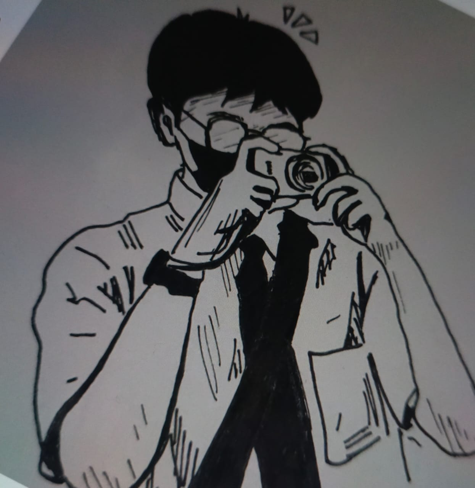
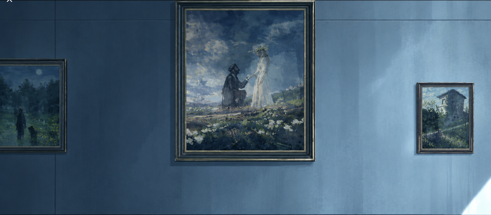
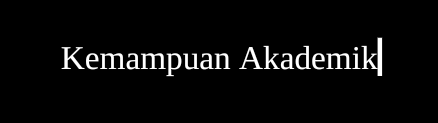
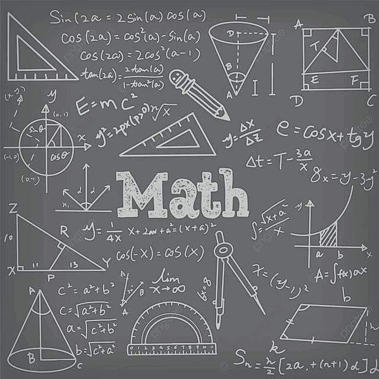
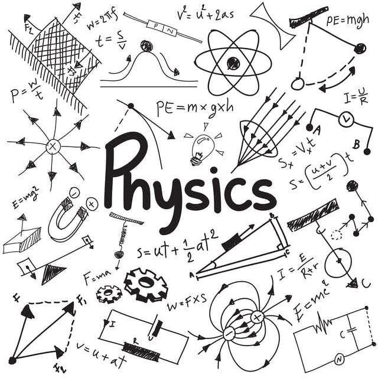
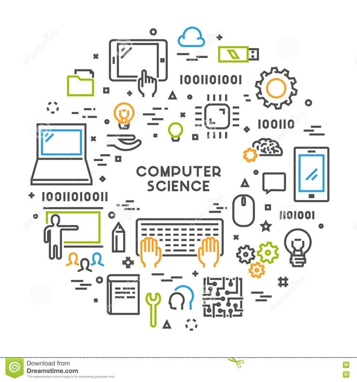
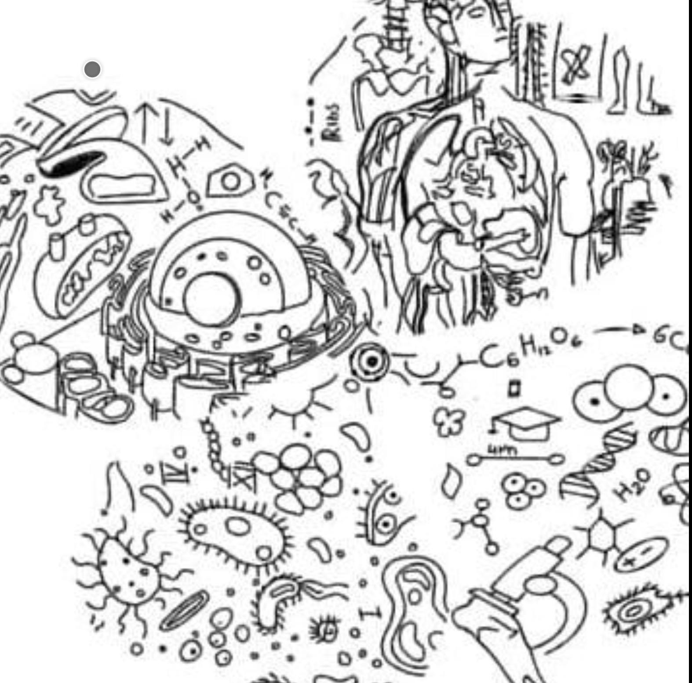

IPB Student | Physics Major

Halo! Saya Davind Chrystian Bong, seorang pelajar yang tertarik dengan dunia web development. Saya sedang belajar HTML dan CSS untuk membangun website yang menarik dan fungsional.

1 / 4


90%

95%

90%

90%
Berikut beberapa proyek dan karya yang saya kerjakan selama belajar di SMA.
INFORMATIKA
Membuat website yang menampilkan bagaimana sebuah rangkaian arduino dapat bekerja untuk menyalakan sebuah lampu yang lebih dari 1
Kemampuan: HTML, CSS, desain web.
Lihat ProyekIPA / BIOLOGI
Membuat poster edukasi tentang pentingnya menjaga kebersihan dan mengurangi sampah plastik di lingkungan sekolah.
Kemampuan: riset, desain, komunikasi.
Lihat KaryaMATEMATIKA
Mengumpulkan data kebiasaan belajar teman sekelas, menyajikannya dalam grafik, dan membuat kesimpulan sederhana.
Kemampuan: pengolahan data, grafik, analisis.
Lihat ProyekTerima kasih sudah mengunjungi portofolio saya. Mari terhubung dan berbagi ide bersama!
💬 WhatsApp Chat langsung dengan saya 📸 Instagram Lihat aktivitas dan karya saya ✉️ Email Kirim pesan melalui email© 2026 Davind Chyrstian Bong | Portofolio Pribadi